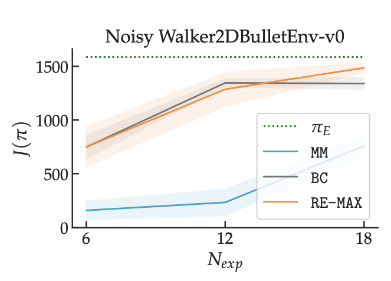

When an online imitation learner attempts to match an expert's state distibution, finite-sample variance can lead them astray. We introduce replay estimation: a technique for smoothing estimates of expert state-action distributions before optimization. In short, one trains a policy via behavioral cloning, performs rollouts in the environment, and adds confidence-weighted trajectories to the demonstration set. We prove that in theory, this is the minimax optimal algorithm for IL in the finite sample regime and that this sort of data augmentation is able to noticeably improve practical performance when demonstrations are scarce.
Online imitation learning is the problem of how best to mimic expert demonstrations, given access to the environment or an accurate simulator. Prior work has shown that in the infinite sample regime, exact moment matching achieves value equivalence to the expert policy. However, in the finite sample regime, even if one has no optimization error, empirical variance can lead to a performance gap that scales with $H^2 / N_{exp}$ for behavioral cloning and $H / \sqrt{N_{exp}}$ for online moment matching, where $H$ is the horizon and $N_{exp}$ is the size of the expert dataset. We introduce the technique of replay estimation to reduce this empirical variance: by repeatedly executing cached expert actions in a stochastic simulator, we compute a smoother expert visitation distribution estimate to match. In the presence of parametric function approximation, we prove a meta theorem reducing the performance gap of our approach to the parameter estimation error for offline classification (i.e. learning the expert policy). In the tabular setting or with linear function approximation, our meta theorem shows that the performance gap incurred by our approach achieves the optimal $\widetilde{O} \left( \min({H^{3/2}} / {N_{exp}}, {H} / {\sqrt{N_{exp}}} \right)$ dependency, under significantly weaker assumptions compared to prior work. We implement multiple instantiations of our approach on several continuous control tasks and find that we are able to significantly improve policy performance across a variety of dataset sizes.
In imitation learning, we usually tell ourselves that the demonstrations we recieve are sufficient to charecterize expert behavior. However, with few enough samples, random variations can make certain states or actions seem more likely than they would in the infinite sample limit.
For example, in the above scenario, if we happen to sample a trajectory of the expert flying through the forest, our learner might think they also have to fly through this more dangerous area with the same probability. If we could query the expert for more demonstrations, this wouldn't be a problem. However, given this can be quite expensive, the question arises of how to make the most out of our data and simulator access.
There's two sources of uncertainty when we have a finite set of demonstrations. The first is the stochasticity in expert actions at a state. The second is the stochasticity in next states that one can end up in after an action. While we can't do much about the former without querying the expert, we can use the simulator to try and tackle the latter. We can replay cached expert actions in a simulator, adding in the transitions to our dataset. As long as we end up in a state where we also have seen an expert action, we can do this repeatedly to generate extra rollouts for free and smooth out our estimate of expert behavior.
The natural question at this point might be how we do this on continuous problems where we are unlikely to end up in exactly the same state more than once. Our insight is that continuous analog to states where we know the expert actions is states where behavioral cloning (which is only focued on matching expert actions) gets the expert action correct. We can therefore use simulated BC rollouts to augment our demonstration set before performing online IL. Putting it all together, replay estimation is the following algorithm:
We prove this is in fact the minimax optimal algorithm for online IL and enjoys a better-than-both worlds guarantee than both behavioral cloning and standard online IL algorithms like GAIL or MaxEnt IRL.
We experiment with various methods for computing confidence scores and find that training an ensemble of BC learners and taking the max difference between any two members of this ensemble seems to work the best. We find that replay estimation (in orange) is able to out-perform both BC and a strong online IL baseline on harder versions of the PyBullet Gym tasks.
We release all of our code at the link below. Our hope is that replay estimation will become a standard step before performing online IL.
Gokul Swamy*, Nived Rajaraman*, Sanjiban Choudhury, J. Andrew Bagnell, Zhiwei Steven Wu, Jiantao Jiao, Kannan Ramchandran
@misc{swamy2022minimax,
title = {Minimax Optimal Online Imitation Learning via Replay Estimation},
author = Gokul Swamy and Nived Rajaraman and Sanjiban Choudhury and J. Andrew Bagnell and Zhiwei Steven Wu and Jiantao Jiao and Kannan Ramchandran,
year = {2022},
booktitle = {Advances in Neural Information Processing Systems},
volume = {34}
}This template was originally made by Phillip Isola and Richard Zhang for a colorful ECCV project, and adapted to be mobile responsive by Jason Zhang. The code we built on can be found here.